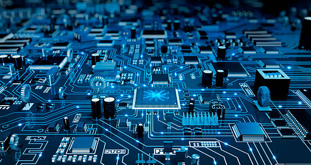

A computer system is an integrated set of hardware and software designed to process data into useful information.
It includes physical components such as the CPU, memory, input/output devices, and storage, working together
with system software like operating systems and application programs. Computer systems perform complex operations
at incredible speeds and are designed to be reliable, scalable, and efficient. They support various functions
from basic tasks like word processing to complex scientific simulations. The architecture of a computer system
determines how the components interact and share resources. Today, they play a vital role in business, education,
healthcare, and nearly every part of modern life.
Input and Output System
Input and output systems are essential for user interaction with a computer. Input devices allow users to
provide data and instructions (e.g., keyboard, mouse, scanner), while output devices display results
(e.g., monitor, printer, speakers). These systems bridge the human-computer interface. Input devices send
information to the CPU, which processes it, and output devices present the outcome. They ensure smooth
communication between the machine and the user, making computers usable and effective in real-world tasks.
Motherboard
The motherboard is the main circuit board of a computer that connects and allows communication between
all components. It houses the CPU, memory, chipset, and connectors for storage, graphics, and peripherals.
It acts like the central nervous system, distributing power and signals to components. Without the
motherboard, no component in the system could work in unison.

Cache and Registry
Cache is a small, fast memory located inside or close to the CPU that stores frequently used instructions
for quick access. It is categorized into three levels:
L1 Cache: Closest to the CPU core, fastest but smallest.
L2 Cache: Slightly larger and slower than L1, still close to the core.
L3 Cache: Shared among cores, largest and slowest of the three but still faster than RAM.
The registry is a Windows-based hierarchical database that stores low-level settings for the operating system
and installed applications. It keeps configuration details and settings.
Summary of Chapter
This chapter introduced the fundamental building blocks of a computer system including its architecture,
input and output devices, the central role of the motherboard, and the importance of cache and registry.
It explained how various components interact to process data efficiently. Understanding these basics helps
students visualize how real-world computer systems work internally and externally.
QnAs
Q1: What is a computer system? Ans: A computer system is a combination of hardware and software designed to perform data processing tasks.
Q2: What are input and output devices? Ans: Input devices send data to the computer (e.g., keyboard), and output devices display results (e.g., monitor).
Q3: What is the function of the motherboard? Ans: The motherboard connects and allows communication between all parts of the computer system.
Q4: Define cache memory. Ans: Cache memory is a small, high-speed memory close to the CPU used to store frequently accessed data.
Q5: Explain the difference between L1, L2, and L3 cache. Ans: L1 is fastest and smallest; L2 is larger but slower; L3 is largest and shared among cores.
Q6: What is a registry in a computer system? Ans: The registry is a database in Windows OS used to store configuration settings and options.